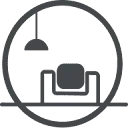
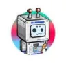
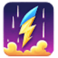
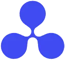
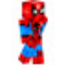

Collov AIДизайн интерьера
Collov AI рассчитан на задачи, где нужно менять фотографии с учётом выбранного оформления. Ещё одно направление работы: работать с информацией о недвижимости.
Раздел «Текст → изображение»: варианты ИИ для этой задачи, описания возможностей и переходы к обзорам. Сравните несколько решений на одинаковом примере.
Создайте обложку для заметки о выращивании зелени на балконе, описав нужный сюжет. Укажите основные растения, ракурс и свободное место под название; после генерации проверьте, различимы ли крупные детали в небольшом превью.
Нарисуй обложку заметки о зелени на балконе: ящики с базиликом, мятой и петрушкой, вид немного сверху. Светлая палитра, свободная область сверху для заголовка, без надписей.

Collov AI рассчитан на задачи, где нужно менять фотографии с учётом выбранного оформления. Ещё одно направление работы: работать с информацией о недвижимости.
«CreataAI» позволяет создавать воспроизведение голоса. «CreataAI» также готовит визуальные материалы по заданию.

DomoAI создаёт визуальные эффекты с помощью набора ИИ-моделей. Среди описанных направлений есть аниме и бумажная стилизация, а также трёхмерные мультяшные варианты и пиксельная графика. Пользователь может выбирать художественную подачу, связывая замысел изображения с доступными стилями обработки продукта.
«hatchful» подготавливает варианты логотипов.
HitPaw Image Generator создаёт художественные изображения по пользовательскому описанию. Среди приведённых направлений есть аниме и киберпанк, а доступ предусмотрен через веб-среду, Android и iOS. Инструмент связывает словесный замысел с генерацией рисунка, позволяя работать с выбранным художественным оформлением на разных устройствах.
«Human Generator» представлен в разделе «Генерация изображений». При выборе проверьте нужную операцию и условия работы с результатом.
«Iconify AI» готовит варианты значков для приложения.
«Jasper Art» готовит визуальные материалы по заданию.
«Kiri.art» готовит визуальные материалы по заданию.
«LogoAI AI» подготавливает варианты логотипов.
«MageSpace» представлен в разделе «Генерация изображений». При выборе проверьте нужную операцию и условия работы с результатом.
«NMKD Stable Diffusion» готовит визуальные материалы по заданию.
«Phantasmagoria» готовит визуальные материалы по заданию.
«Prodia AI Art» готовит визуальные материалы по заданию.
Reimagine создаёт несколько изображений по текстовому запросу и дополняет генерацию средствами обработки. В наборе предусмотрены очистка, удаление окружения и надписей, изменение света и масштабирование. Продукт объединяет поиск визуального варианта с последующей правкой, позволяя рассматривать создание картинки и работу над её отдельными элементами как связанные задачи.
Stable Diffusion Online на веб-сайте stablediffusionweb.com создаёт изображения по описанию. В интерфейсе доступны визуальный референс и настройки оформления генерируемой картинки.
«Text To Book Cover» готовит визуальные материалы по заданию.
«Unstable Diffusion» готовит визуальные материалы по заданию.
«activeig.com» готовит визуальные материалы по заданию.

«AI App Icon Generator» готовит варианты значков для приложения.
«AI Canvas (kive.ai)» готовит визуальные материалы по заданию.
«AIGraphics» представлен в разделе «Дизайн». При выборе проверьте нужную операцию и условия работы с результатом.
Aitubo создаёт изображения из эскизов с помощью ИИ, включая игровые материалы и фотографии. В продукте также представлены мультяшные визуальные варианты. Редактор позволяет изменять созданные изображения и уточнять художественные ресурсы, связывая генерацию и дальнейшую обработку в одном процессе.
Aragon.ai подготавливает деловые портреты из фотографий человека. При выборе результата нужно учитывать узнаваемость лица и назначение изображения в профиле.
Сравнивать «ArchitectAI» с другими инструментами раздела «Генерация изображений» удобнее на одинаковом исходном материале.
«ArchVizz» представлен в разделе «Генерация изображений». При выборе проверьте нужную операцию и условия работы с результатом.
«Arteus AI» готовит визуальные материалы по заданию.

В инструменте «Automateed» можно готовить текст по теме и требованиям к содержанию. Ещё одно направление работы: развивать сюжет и готовить авторский черновик.
«Brain Pod AI - image generator» готовит визуальные материалы по заданию.
Для «Cabina AI» сначала определите свою задачу и требуемый результат. Карточка относится к направлению «Генерация изображений».
«Chatgptweb.ru» готовит текстовый черновик по условиям задачи.
Designs.ai распределяет общее задание между специализированными ИИ-агентами для разных видов контента. Платформа работает с изображениями и видео, презентациями и звуком. При подготовке материалы ориентируются на единый стиль бренда, связывая отдельные направления генерации в общей задаче оформления и коммуникации.
«Eluna» отделяет объект от фона изображения. «Eluna» также готовит текстовый черновик по условиям задачи.
«Genly» готовит визуальные материалы по заданию.
«GPTJet» представлен в разделе «Генерация изображений». При выборе проверьте нужную операцию и условия работы с результатом.
Для «iDrawAi» сначала определите свою задачу и требуемый результат. Карточка относится к направлению «Генерация изображений».
«Image AI App» отделяет объект от фона изображения. «Image AI App» готовит визуальные материалы по заданию.
Для «Inktee ai» сначала определите свою задачу и требуемый результат. Карточка относится к направлению «Генерация изображений».
Сравнивать «InstantArt» с другими инструментами раздела «Генерация изображений» удобнее на одинаковом исходном материале.
Для «Limnr AI» сначала определите свою задачу и требуемый результат. Карточка относится к направлению «Генерация изображений».

Minecraft Skin Generator создаёт игровой скин из текстового задания на русском языке. Пользователь описывает образ и получает файл PNG для Minecraft. В интерфейсе предусмотрен объёмный предпросмотр, позволяющий рассмотреть внешность созданного персонажа перед дальнейшим использованием полученного изображения в игре.
«PicverseAI» готовит визуальные материалы по заданию.
«Pixelmind» представлен в разделе «Генерация изображений». При выборе проверьте нужную операцию и условия работы с результатом.
Pixlr объединяет фоторедактор с генеративными ИИ-инструментами. Пользователь может создавать картинки по тексту, менять лицо и применять генеративную заливку. Продукт связывает работу с существующим изображением и создание нового содержимого, когда визуальная идея может начинаться либо с исходного снимка, либо со словесного описания нужного результата.
«Pollinations» подготавливает трёхмерные объекты.
«promptoMANIA» готовит визуальные материалы по заданию.
«QRBTF» помогает готовить изменения программного кода.
Для «Rescape AI» сначала определите свою задачу и требуемый результат. Карточка относится к направлению «Генерация изображений».
Страница 3 из 9